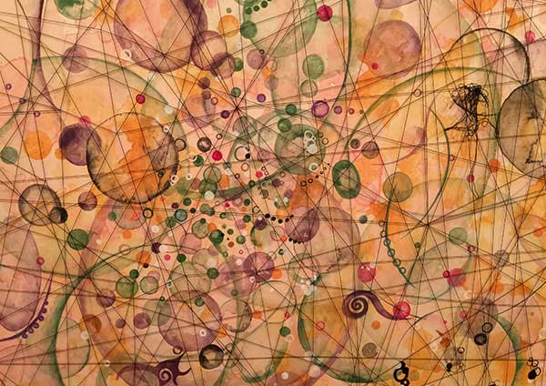
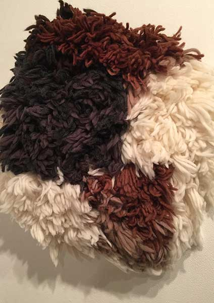
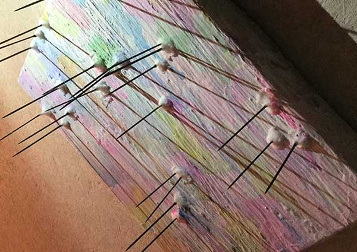
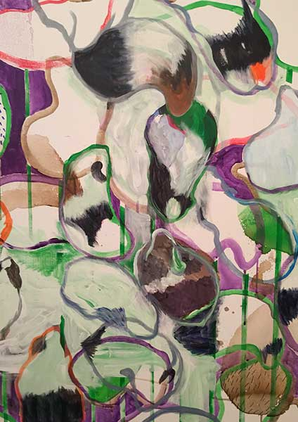

展覧会概要
武蔵野美術大学造形学部通信教育課程の在学生、卒業生による展覧会招請作家として大塚揚紀さんをお招きし、総勢17名のグループ展です。
【毛】を共通テーマにしたグループ展「けっこうけだらけ」”毛”それは生きている限り伸び続け、身体を守る働きをしている。それは同時に生命が絶えると毛は伸びなくなることでもある。生きているから伸びるという”毛”を通して生命の原点を見てみませんか？
基本情報
| 開催場所 | The Artcomplex Center of Tokyo ACT5 |
|---|---|
| 展示期間 | 3/14(火)~3/19(日) |
| OPEN | 11:00 |
| CLOSE | 20:00(※最終日は17:00までとなります） |
Reception party
| 開催日時 | 3/18(土)17:00~ |
|---|
参加アーティストが大集合。作品についてそれぞれの思いを語るギャラリートークも開催！作家自身の解説を聞きながら、作品を鑑賞できます。 飲み物、軽食もご用意して皆様とお会いできるのを楽しみにしています。
作家紹介
個性溢れる16人の作家、そして招聘枠として大塚揚紀さんを迎えての大規模なグループ展となります。参加アーティストの今回の作品に対する情熱をぜひ、感じてください。
- 1976年 茨城県生まれ
- 2002年 東京藝術大学絵画科日本画専攻卒業
- 2007年 個展（ちばぎんアートギャラリー）
- 2009年 個展（銀座スルガ台画廊）
- 2011年 個展（Nroom artspace)//ベルギーアートフェア「Lineart」出品
- 2012年 個展（西武百貨店沼津）
- 2013年 グループ展（ロサンゼルス、ギャラリー無常）
- 2015年 成城さくらさくギャラリー新春展出品/個展（成城さくらさくギャラリー）
- 現在 無所属 読売カルチャー大宮絵画教室講師 カルチャー高根台絵画教室講師 武蔵野美術大学通信教育過程フレスコ画臨時助手
-
眞野浩一 浜辺に座る女性を描きました。一見、単なる人物画でありながら画面全体を観ると、人の気配がなくシュールさ、さえ感じます。それは無意識というものを表現したためです。何れにせよ観て楽しんでいただき更に何かを感じ取ってもらえれば幸いです。
-
増田雅子 人間の髪の毛の太さは平均して約0.06mm程だそうです。その中に、その人自身の情報がビッシリと詰まっている・・・まさに生命そのものです。今回はそんな生命の不思議を考えながら、作品の制作に取り組んでいます。
-
酒徳み雪 月並みですが愛猫をモチーフに作品を作成中です。当家の猫はドイツの保護施設から引き取った猫です。保護施設では来訪者が「この猫が欲しい」と選ぶのではなく「あなたの家庭環境ならこの猫を譲渡できる」と施設職員から提案がある形で、姿形で選ぶ事が出来ません。そういう偶然を経て我が家に来た猫はトルコ生まれの雑種の三毛猫でした。実は白黒の猫が欲しいなあと思って保護施設を訪ねました。ツートンカラーでスタイリッシュだと思ったのです。縞模様も混じったこの三毛猫はカラフルすぎるなんて思いました。しかし、引き取ってしまえばやはり「この猫が一番！」となりました。複雑な模様は見ていて飽きず、白い胸毛は真っ白で美しく、まつげは赤くて格好よいのです。といったように、この世界一美しい猫(笑)をモチーフに見ている方が楽しんでいただける作品を作りたいと思います。
-
 Suga テキスタイルや絵画を中心に活動をしているサラリーマン作家です。失われつつある昔の技法を現代風にアレンジする作風です。今回のグループ展に出品する作品は絵画になります。油の人物画です。タイトルは「迷い」です。毛をテーマとしながら何に迷っている？！それは会場にてお楽しみとさせて頂きます。特徴として一部、染めの技法の「型染め」を取り入れています。※現段階では作品未完のため説明用に以前の写真を掲載しましたまだまだ作家と言えるほど活動はしていません、皆さんの脚を引っ張らないよう頑張ります。どうぞ宜しくお願い致します。
Suga テキスタイルや絵画を中心に活動をしているサラリーマン作家です。失われつつある昔の技法を現代風にアレンジする作風です。今回のグループ展に出品する作品は絵画になります。油の人物画です。タイトルは「迷い」です。毛をテーマとしながら何に迷っている？！それは会場にてお楽しみとさせて頂きます。特徴として一部、染めの技法の「型染め」を取り入れています。※現段階では作品未完のため説明用に以前の写真を掲載しましたまだまだ作家と言えるほど活動はしていません、皆さんの脚を引っ張らないよう頑張ります。どうぞ宜しくお願い致します。 -
ホシノケイスケ 毛をはやします。
-
いけだ ひろあき 絵を描いています。
-
 保阪 栄美子 皆さんは誰かに髪の毛を切ってもらっていますか？その先にはどんな人がいますか？職業というのはスポットライトに当たることはあまりありません。その職業の方たちを少し思い起こしてみませんか。
保阪 栄美子 皆さんは誰かに髪の毛を切ってもらっていますか？その先にはどんな人がいますか？職業というのはスポットライトに当たることはあまりありません。その職業の方たちを少し思い起こしてみませんか。 -
 矢島利恵 髪の毛の持つうねりや流れなどの動きは、時としてそれ自体が別の生命を持ったかのような存在にみえる。そんな動き出した存在を見て頂きたい。
矢島利恵 髪の毛の持つうねりや流れなどの動きは、時としてそれ自体が別の生命を持ったかのような存在にみえる。そんな動き出した存在を見て頂きたい。 -
山崎春香 一見モチーフだけ見ると意味深なようですが、実際は描きたいから描いた！という単純な構成です。
-
 にわひろじ 毛と言えば「ドラえもんの左右それぞれ３本」「オバQの毛が３本」３本の毛にもどんな世界が広がることやら・・・。
にわひろじ 毛と言えば「ドラえもんの左右それぞれ３本」「オバQの毛が３本」３本の毛にもどんな世界が広がることやら・・・。 -
長谷川裕美 この作品には6人の私がいます。全ての要素に、様々な私が関わり、全てが私に繋がる。私は私。Yes.I am
-
樋口緑 室内なんだけど、広々とした風景画のような雰囲気を描きたいです。
-
 ｅｎａ 「椿オイル使用しているシャンプー」をサブテーマとして制作をしました。髪の動き、そして、シャンプーの香りまで伝わるような作品にできたらと思います。
ｅｎａ 「椿オイル使用しているシャンプー」をサブテーマとして制作をしました。髪の動き、そして、シャンプーの香りまで伝わるような作品にできたらと思います。 -
 jona いつもは平面で作品を作っていますが、今回は良い素材を見つけたので立体を構成しようと思っています。
jona いつもは平面で作品を作っていますが、今回は良い素材を見つけたので立体を構成しようと思っています。 -
 まやこ 今般の作品は、まだ制作に入っていないのですが、今のところ自分の背丈程の立体にしようと思っています。皆さんの足を引っ張らないように頑張りたいと思います。よろしくお願いします。
まやこ 今般の作品は、まだ制作に入っていないのですが、今のところ自分の背丈程の立体にしようと思っています。皆さんの足を引っ張らないように頑張りたいと思います。よろしくお願いします。 -
新井彩 テーマを一度暗号化し、遠くから眺めてみた。離れようとすればするほど、すぐ後ろに来てしまう。悩みながら描いた世界をぜひ感じて欲しい。
新着情報
アクセス
The Artcomplex Center of Tokyo ACT5
東京都新宿区大京町12-9
- ■東京メトロ丸の内線「四谷三丁目」駅 出口１より徒歩7分
- ■JR総武線「信濃町」駅より徒歩7分